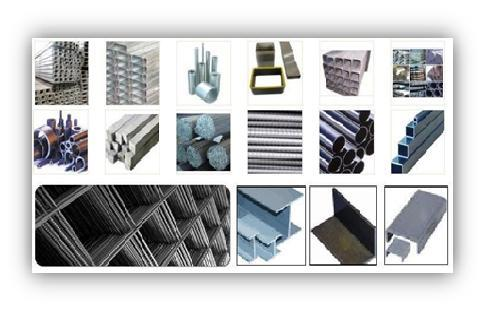

Econo Steel is a Melbourne based steel and metal distribution service center that commenced trading in January 1999, with a plant located at 9-13 Lamana Road, Mordialloc, Victoria. We have a large inventory of various items and we service a very large and diverse customer base. Econo-Steel is an independent supplier of unique materials suitable for countless applications.
Our experience extends into many industries, and sourcing materials is our specialty. We have a large database of local and international suppliers to draw materials from.
We have the experience and expertise to handle your business professionally.


To contact us: Phone: +61 (03) 9587 2100 Email us here.
9-13 LAMANA ROAD, MORDIALLOC, Melbourne, VIC, 3195 AUSTRALIA

Phone: (03) 9587 2100
Due to its strength, durability, and versatility, steel products are extensively employed in the construction, manufacturing, and several other industries. Steel-based items, such as netting and roofing, are vital to our daily life. The various kinds of steel items that are sold on the market and their uses will be discussed in this article.
1. Introduction to Steel Products
Steel is an iron and carbon alloy that has been given a boost in quality by the addition of manganese, silicon, and phosphorus. Before being utilised to make steel products, steel is moulded into a variety of shapes, including bars, sheets, pipes, and wires.
2. Melbourne, a centre for steel products in Australia
Melbourne, one of the biggest cities in Australia, is a major hub for the manufacture of steel goods. Steel Melbourne offers a range of steel products, including structural steel, steel plates, steel pipes, and steel mesh.
3. Steel Building
Structural steel is used to construct buildings, bridges, and other structures. It is available in many different shapes, such as channels, I-beams, and H-beams. Steel is a strong, durable material that can support enormous loads when used in construction.
4. Sheets of steel
Construction of huge ships, machinery, and equipment uses steel plates. They are available in a variety of sizes and thicknesses and can be customised to meet specific requirements.
5. Steel Pipes
Steel pipes are frequently used for the transportation of liquids and gases such as water, oil, and natural gas. They are available in a range of sizes and thicknesses and can be utilised for both aboveground and subsurface purposes.
6. Steel Mesh
Steel mesh is a versatile material used in construction, mining, and agriculture. It is available in a range of shapes and sizes and can be used for filtration, reinforcement, and fencing.
7. Metal Roofing
Steel roofing is a common option for both residential and commercial buildings because of its durability and simplicity of upkeep. Steel roofing is available in a range of colours and patterns and can be customised to meet specific requirements.
8. Positive Impact of Steel Products
Steel goods have a number of advantages, including strength, toughness, and adaptability. Steel can be recycled and used again, making it another sustainable commodity.
9 Uses for Steel Products
Several industries, including construction, manufacturing and transportation, require steel products. They are used in the construction of buildings and bridges, in the manufacture of machines and equipment, and in the transportation of liquids and gases.
10. Steel products versus other materials
Steel products are often compared to products made of aluminum and wood. Aluminum is less strong and durable than steel, although it is lighter. Although steel is a renewable resource, it is stronger and more durable than wood.
Conclusion
Steel products are an essential part of our lives, from the buildings we live in to the equipment we use. Econo Steel Melbourne offers a wide range of steel products, including structural steel, steel plates, steel pipes, and steel mesh. Choosing the right steel product depends on several factors, and consulting with a steel supplier can help in selecting the right product. Steel products offer several benefits such as strength, durability, and sustainability, and maintaining them properly can extend their life.
©2023
*